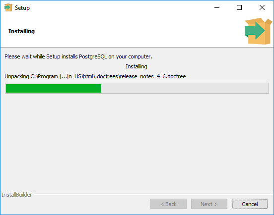
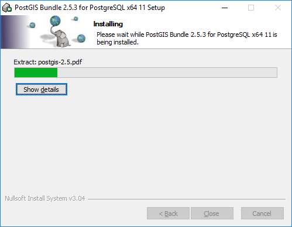

Instalação do PostgreSQL/PostGIS para Microsoft Windows 10¶
Instalação do PostgreSQL 11.6¶
Na página de download do PostgreSQL, selecione a opção Windows, como mostrado na figura abaixo.
{kind=link}
Ao selecionar a opção Windows você será redirecionado para a página de instaladores do Windows. Acesse o link Download the installer como mostrado a seguir:
{kind=link}
Após o acesso, é exibida uma tabela de opções de instaladores. Selecione a opção PostgreSQL Version 11.6 para Windows x86-64 como indicado na figura.
{kind=link}
Após o download ser concluído, siga os passos apresentados a seguir:
1. No diretório de Downloads do Windows, abra o instalador postgresql-11.6-3-windows-x64:
{kind=link}
2. Após iniciar o instalador, será exibida uma janela para configuração do PostgreSQL (Setup - PostgreSQL). Pressione Next > para continuar.
{kind=link}
3. Se você possui um disco SSD de pequeno porte, sugerimos alterar o local da pasta de destino do PostgreSQL para um disco com maior capacidade. Aponte para o diretório que você deseja instalar o PostgreSQL e pressione Next > para continuar.
{kind=link}
4. O instalador irá apresentar as opções de componentes a serem instalados. Selecione as opções de acordo com a imagem a seguir, e pressione Next > para continuar.
{kind=link}
5. Assim como no passo 3, se você possui um disco SSD de pequeno porte, sugerimos alterar o local da pasta de destino dos dados a serem armazenados para um disco com maior capacidade. Aponte para a pasta desejada e pressione Next > para continuar.
{kind=link}
6. Defina uma senha para o super-usuário postgresql, e pressione Next > para continuar.
{kind=link}
7. Selecione o número da porta desejada para o servidor PostgreSQL. Por padrão define-se o número de porta 5432. Caso a porta 5432 já esteja em uso por outra aplicação, utilize outro número de porta para o servidor PostgreSQL. Pressione Next > para continuar.
{kind=link}
8. Na etapa de opções avançadas (Advanced Options) mantenha Locale definido como apresentado na figura abaixo, e pressione Next > para continuar.
{kind=link}
9. A próxima janela apresenta um resumo das opções de configuração que serão utilizadas na instalação do PostgreSQL. Pressione Next > para continuar.
{kind=link}
10. Essa janela mostra apenas que o processo de instalação encontra-se em progresso:
{kind=link}
11. Ao final da instalação, uma janela como mostrada abaixo será apresentada. Mantenha a opção Stack Builder selecionada. Pressione Finish para finalilzar a instalação do PostgreSQL:
{kind=link}
Instalação do PostGIS 2.5¶
Mantendo a opção Stack Builder selecionada ao final da instalação do PostgreSQL, será apresentada uma nova janela de instalação (Stack Builder 4.2.0). O Stack Builder é utilizado para fazer o download e instalação de ferramentas e aplicações adicionais ao PostgreSQL.
O Stack Builder será utilizado para instalação da extensão espacial PostGIS, para isto, siga os passos apresentados a seguir:
1. Na primeira janela exibida pelo Stack Builder é apresentada a versão (ou versões) do PostgreSQL instalada no sistema. Selecione a opção PostgreSQL 11(x64) como mostrado na figura abaixo e pressione Next > para continuar.
{kind=link}
2. No item Categories, abra o subitem Spatial Extensions e selecione a opção PostGIS 2.5 Bundle for PostgreSQL 11 (64bit) v2.5.3 como ilustrado na próxima figura. Pressione Next > para continuar.
{kind=link}
3. Aponte para o diretório que você deseja realizar o download do instalador PostGIS e pressione Next > para continuar.
{kind=link}
4. Conforme apresenta a próxima imagem, mantenha a opção Skip Installation desmarcada e pressione Next > para iniciar a instalação do PostGIS.
{kind=link}
5. Ao final do processo de download será exibida uma nova janela para dar continuidade a instalação do PostGIS. O PostGIS é baseado em diversos softwares livres. Nessa janela você deverá aceitar os termos da licença do PostGIS e de outros sistemas ou bibliotecas. Pressione I Agree > para continuar:
{kind=link}
6. Na opção de componentes a serem instalados, selecione conforme indicado na figura e pressione Next >.
{kind=link}
7. Aponte para o diretório que você deseja instalar o PostGIS e pressione Next >.
{kind=link}
8. Essa janela mostra apenas que o processo de instalação do PostGIS encontra-se em progresso:
{kind=link}
9. Selecione Sim (Yes) para registrar a variável de ambiente GDAL_DATA como apresentado abaixo:
{kind=link}
10. Selecione Sim (Yes) para habilitar os drives de dados raster, registrando a variável de ambiente POSTGIS_GDAL_ENABLED_DRIVERS.
{kind=link}
11. Selecione Sim (Yes) para registrar a variável de ambiente POSTGIS_ENABLE_OUTDB_RASTERS como indicado.
{kind=link}
12. Se o processo de instalação foi realizado com sucesso, uma janela como mostrada abaixo será apresentada. Pressione Close para finalilzar a instalação:
{kind=link}
13. Ao final da instalação, será apresentada a janela do Stack Builder confirmando o processo de instalação do PostGIS. Pressione Finish para finalilzar o processo.
{kind=link}
Testando a instalação do PostgreSQL/PostGIS para Microsoft Windows 10¶
O PostgreSQL/PostGIS pode ser acessado através de diferentes formas. Utilizaremos a aplicação pgAdmin4 (instalado durante o processo de instalação do PostgreSQL).
No menu de aplicações do Windows 10 encontre e inicialize o pgAdmin 4 como indicado na figura abaixo:
{kind=link}
No primeiro acesso ao pgAdmin 4, será necessário definir uma senha (aplicável apenas a usuários do modo de área de trabalho) que irá ser utilizada para proteger e desbloquear posteriormente as senhas salvas do servidor. Pressione OK para continuar

Ao inicializar o pgAdmin 4, uma janela como a mostrada abaixo será exibida:
{kind=link}